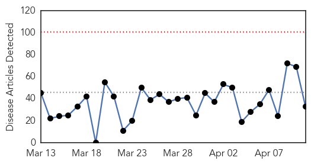
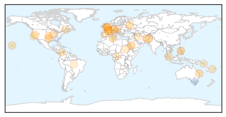

Cholera
30-Day Web Trend
0 alerts, 0 warnings

30-Day Twitter Trend
0 alerts, 0 warnings

Article Locations

Article Confidences
Top Articles:
- 0.988
- Haiti Cholera Response United Nations in Haiti, March 2014 - Haiti
- 0.973
- Why Cholera Persists In Haiti Despite An Abundance Of Aid
- 0.958
- Cholera killed 60 in Nigeria's Bauchi in 2014
- 0.922
- Cholera outbreak claims 54 lives in Bauchi- NAN
- 0.905
- Lao gov't formulates plans for possible bird flu outbreak
- 0.540
- Tracking an Ebola Outbreak in a City Without Maps
Top Tweets:
-
No tweets found for Apr 11, 2014
Unknown
30-Day Web Trend
0 alerts, 0 warnings

30-Day Twitter Trend
1 alerts, 0 warnings

Article Locations
Article Confidences

Top Articles:
- 0.999
- One foreign health worker dies, five infected with MERS in UAE
- 0.999
- One foreign health worker dies, five infected with MERS in UAE -agency
- 0.983
- Top compensation proposed for MERS-hit medical staffHealthcare
- 0.917
- Chicago Tribune
- 0.917
- Chicago Tribune
- 0.917
- Chicago Tribune
- 0.860
- ‘Hardy’ stomach bug sickens 425 despite fewer outbreaks
- 0.854
- Fluoride set for Maryborough
- 0.830
- Can your cat give you TB?
- 0.784
- Pink Eye Extends School Closures In American Samoa
- 0.779
- Health chief takes Illinois tuberculosis patient to court
- 0.765
- Food poisoning more likely in restaurants than home
- 0.755
- KRNV, Reno, NV
- 0.755
- KRNV, Reno, NV
- 0.738
- Polio outbreak in Cameroon poses threat to African neighbours: WHO - National
- 0.720
- which borders troubled CAR
- 0.684
- Solomons flooding aftermath worsens
- 0.676
- Do You Really Need To Go To The Hospital?
- 0.653
- 500 factory workers screened for tuberculosis
- 0.636
- Hunger Could Kill 50,000 South Sudanese Children This Year, UNICEF Warns
- 0.634
- EurekAlert! Science News
- 0.623
- World Vision provides water as disease spreads in flood-affected Solomon Islands - Solomon Islands
- 0.602
- Sacré-Coeur Hospital visiting hours shortened after outbreak
- 0.570
- Halifax, Nova Scotia, Bridgewater, Health, Centre, Family, Area, Opening, Today, April, Official, People, Open, Easier, Doors, Care, Held
- 0.561
- How WHO is Aiding Victims of Extreme Conflict
- 0.551
- Iran to fight US visa rejection of controversial UN envoy
- 0.551
- Ukraine turns to Germany and France for gas
- 0.551
- Suspect in Northern Ireland’s worst bombing due in court
- 0.551
- German shop apologises over Hitler coffee mugs
- 0.551
- Debt-laden France sells off lavish foreign properties
- 0.549
- Pope asks forgiveness for child abuse by priests
- 0.549
- Frenchman jailed for two years on slavery charges
- 0.521
- Update: Consumers Warned About Toxins in Fish, Crab From Two CA Counties
Top Tweets:
- 0.761
- Flu Fact Friday: The flu comes originally from birds.
- 0.649
- Venezuela: "O dialogamos o nos matamos": En un encuentro de más de seis horas, el gobierno del presidente Nico... http://t.co/VkdhzFB51t
- 0.591
- Controlarán uso de uniformes camuflados por parte de civiles: Las Fuerzas Armadas emitió hoy un comunicado en ... http://t.co/FIoUo7PaPk
- 0.504
- FluFactFriday: During the 2013-14 flu season, more than 60% of reported flu hospitalizations were in ppl 18-64 yrs old NPHW